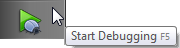
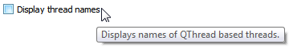
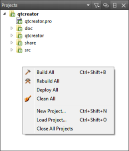
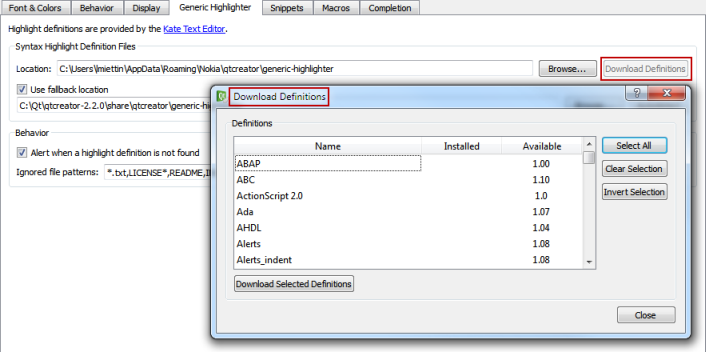
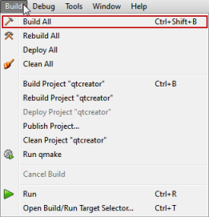
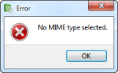
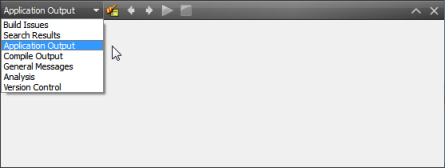
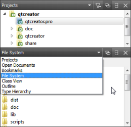

User Interface Text Guidelines
Follow the guidelines in this section to make sure that your extensions are consistent with the Qt Creator UI and that they can be easily localized into different languages.
When you write UI text, make sure that it is:
- Consistent with existing Qt Creator UI terms
- Short and concise
- Neutral, descriptive, and factually correct
- Unambigious
- Translatable into different languages
Grammar and Style
All UI text must be grammatically correct English and use the standard form of written language. Do not use dialect or slang words. Use idiomatic language, that is, expressions that are characteristic for English. If possible, ask a native English speaker for a review.
UI text should be concise and economically formulated. Avoid unnecessary content words and phrases. However, it is more important that the text is useful and easy to understand.
Avoid addressing the user in the second person. Use a neutral tone or passive voice but use a formal address when necessary. Avoid using the word Please when addressing the user. Exceptions to this are some copyright text and short imperative sentences that might otherwise sound abrupt. For example, Please wait.
Avoid abbreviations in the menu names and items. If there is no room for the full spelling or hyphenation of a word, abbreviate the text according to the English abbreviation rules.
Avoid contractions. For example, write cannot instead of can't.
Punctuation
Avoid using punctuation marks or special characters in menu names and items.
Use punctuation marks as follows:
- Use full stops in messages.
- Never use full stops (.) at the end of menu item names.
- Place three full stops (...) at the end of menu item names that open a dialog requiring user action.
- Use exclamation marks (!) only in text that demands extra attention from the user or carries special weight.
- Use quotation marks ("") around variable values. For example, Close Project "qtcreator". For consistency, use double quotes to emphasize or set apart file names, directory names, URLs, and so on, in user visible strings.
- Do not use leading, trailing, or multiple spaces to align text in messages, as translation tools might not handle them correctly.
Writing Tooltips
Tooltips contain useful information about icons, menu items, or other UI elements. They appear when users place the mouse pointer over an UI element. You can also add descriptive text to the UI that is always visible.
Consider adding tooltips for all UI elements that are not obvious from the context. The tooltips should help users understand what the UI controls do, so try to make them as clear as possible, even if they get a bit long.
Tooltips for Icons
For an icon, you can use the command name as a tool tip. In that case, use book style capitalization and do not add a period after the tool tip.

Other Tooltips
Tooltips can also contain full sentences.

Follow these guidelines:
- Write useful tooltips, but keep them as short and concise as possible.
- To help people who localize and people for whom English is a second language, make tooltips as grammatically clear as possible. Use the articles a, an, and the, prepositions, such as of, and demonstrative pronouns, such as this and that, wherever possible.
- Use sentence style capitalization and punctuation as you would for any sentence.
- For input fields, describe the value of the field. Tell users what they can enter in the field, such as a name or a path, unless it is obvious from the context. Use a noun phrase, such as The name of the user account. Describe limitations and special requirements.
- For actions, such as most check boxes, radio buttons, push buttons, and menu items, describe what happens when users select them. Use a verb phrase, such as Removes trailing whitespace upon saving.
- For combo boxes, describe when to pick each option.
- Describe what the UI control does, not how to use it. If the control does not work as users would expect it to, check your design, as you most likely chose the wrong type of control.
- Do not describe the default value or the minimum and maximum values, as users can see them in the field.
Examples
| Control | Do | Don't |
|---|---|---|
| Button - Download Definitions | Download missing and update existing syntax definition files. | You can select this button to download syntax definition files. |
| Check box - Clean whitespace | Removes trailing whitespace upon saving. | Enable this check box to remove trailing whitespace upon saving. |
| Combo box - Size | The font size used in the terminal (in points). | Use the up and down arrows to set the font size between 1 and 100. |
| Field - Shell arguments | The arguments to be passed to the shell. | Sets the arguments to be passed to the shell. |
Writing Tooltips in Design Mode
In Qt Designer, use plain text for tooltips. For extra formatting, write short, canonical HTML in the source tab of the rich text editor: <html><head/><body><b>Note:</b> text.
Qt Designer has a feature that simplifies the rich text (on by default), but still, you should verify by looking at the Source tab.
Writing Messages
Check that messages are concise and economically formulated. However, it is more important that the messages are useful and easy to understand.
Keep the use of many new and different sentence structures to a minimum. Reuse sentence structures that have been used in similar situations. For example:
- Cannot send log as selected message type. Text is too long.
- Cannot receive image.
- Cannot insert picture. Maximum text length is 120 characters.
- Image name already in use.
- Folder name already in use.
UI Text Capitalization
Two styles are used, book title and sentence style:
- Example of Book Title Capitalization
- Example of sentence style capitalization
Using Book Style Capitalization
When using book style capitalization, capitalize all words, except prepositions that are shorter than five letters (for example, 'with' but 'Without'), conjunctions (for example, and, or, but), and articles (a, an, the). However, always capitalize the first and last word.
Use book style capitalization for:
- Titles (window, dialog, group box, tab, list view columns, and so on)
- Functions (menu items, buttons)
- Selectable items (combobox items, listbox items, tree list items, and so on)
Checking Book Style Capitalization
If necessary, use an online Title Case Converter to check book style capitalization of UI text or headings in documentation.
Or, use the to-title-case.js script in the \doc\titlecase folder:
- Open to-title-case.html in a browser.
- Enter the UI text in the field.
- Click Convert.
The UI text with suggested book style capitalization is displayed in the field to the right.
Note: The script is based on word lists; it does not perform grammatical analysis. Therefore, it might get the capitalization wrong if you use a rare meaning of a word. For example, should you mean feathers and not direction when you write down. However, you should be able to trust it in most cases in the context of writing UI text and technical documentation.
Using Sentence Style Capitalization
When using sentence style capitalization, capitalize only the first letter, except proper names.
Use sentence style capitalization for:
- Labels
- Tool tips
- Descriptive text
- Other non-heading or title text
Preparing for Localization
Qt Creator is localized into several languages. Consistency and conciseness make UI text easier to translate.
Marking UI Text for Translation
Make sure the text strings presented to the user are easy to translate. The user interface text strings are enclosed in tr() calls and extracted from the source code during the translation process. Therefore, the translator might not know the source code context of the messages.
You can add comments that are visible in Qt Linguist ( //:) to clarify the context. For example:
//: Contact book "Add person" button label return tr("Add");
If the class is not Q_OBJECT, use QCoreApplication::translate("class context", "message") or consider using Q_DECLARE_TR_FUNCTIONS. Do not use QObject::tr(), which is confusing because the messages appear grouped by class context in Qt Linguist and messages tied to QObject do not have a class context.
Use QDir::toNativeSeparators() for file and directory names that you pass to tr().arg().
Do not use markup that spans the whole string because that can be confusing for translators. For example, instead of:
tr("<html><head/><body><span>UI Text</span></body></html>")
use
QLatin1String("<html><head/><body><span>") + tr("UI Text") + QLatin1String("/span></body></html>")
Features of Languages or Writing Systems
To allow for localization of your extensions, consider the impact that languages and writing systems have on the implementation.
| Features of Languages or Writing Systems | Impact on Implementation |
|---|---|
| Word order | Different languages have different word order rules. Do not use run-time concatenation. Use complete phrases and "%1" formatting instead. For example, use:
instead of
|
| Singular vs. plural vs. dual forms | Some languages do not have plural form (for example, Chinese and Japanese), whereas some have a different form for dual. Allow room for text expansion in the layout design. Some languages need more space to indicate plurality or duality to convey the needed information. For example, use
instead of
|
| Gender | Some languages have gender (feminine, masculine, neutral), whereas some do not (for example, Finnish) or do not use it extensively (for example, English). Do not reuse text strings. The same term may not work in another context due to the gender of the base word. Articles have a grammatical gender in some languages and sentences cannot be as easily constructed as in English. Avoid following types of constructs:
|
Common Qt Creator Terms
This section summarizes the terminology used for common Qt Creator UI components. It also describes the conventions for naming different types of UI components.
Always check that the term you plan to use is not used to mean something else in the UI. If a suitable term already exists, use it. For example, use Find for searching and New for wizards that create new objects.
For more information on how to add UI components, see Common Extension Tasks.
| UI Text | Usage | Conventions |
|---|---|---|
| Context menu | Opens when users right-click on the screen. Contents depend on the context.  | You can add menu items that are relevant in a particular context. Follow the conventions for naming menu items. |
| Dialog | User interface element that usually contains a number of choices or allows the user to give input to the application. Opens when users select a menu item or button.  | Use the menu item or button name as the dialog name. You can also combine the menu item or button name and the name of the object that is managed in the dialog. For example, the Add button in the Documentation options opens the Add Documentation dialog. |
| Locator | Allows you to browse not only files, but any items defined by locator filters.
| You can add locator filters. Check that the filter is not already in use and give the filter a descriptive name. |
| Menu | Contains menu items that represent commands or options and that are logically grouped and displayed. A menu can also contain submenus. | You can create new menus. Use short, but descriptive names that are consistent with existing menu names. Use unambigious names. |
| Menu item | Represents a command or an option for users to choose.  | You can add new items to menus. Use short, but descriptive names that are consistent with existing menu names. Use unambigious names. |
| Message box | Dialog that provides feedback to users, in the form of status information, a warning, or an error message.  Output from Qt Creator should be displayed in output views, instead. | Use the event as the title and provide a solution in the message box. |
| Mode | Modes correspond to complete screens of controls, specialized for a task.
| You can add a mode for a new type of editor, for example. Use descriptive, but short mode names. They have to fit in the Mode selector. |
| Output | Views to display output from Qt Creator.  | Use descriptive names for output views. |
| Sidebar | A view available in the Edit and Debug modes that you can use to browse projects, files, and bookmarks, and to view the class hierarchy.  | You can add views to the sidebar menu. Use descriptive names for them. |
| View | An area of the screen that displays information for users and provides them with functions for managing the information. Available in Debug mode, for interaction with the program that is running under the control of the debugger.
| Use descriptive names for views. |